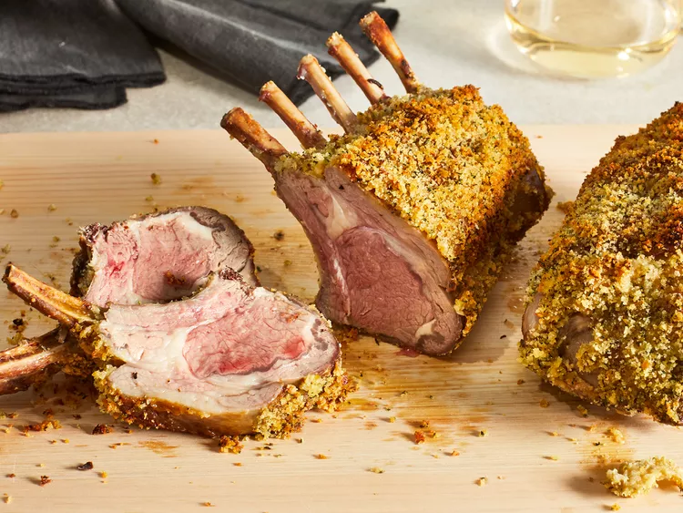

Herb-Crusted Rack of Lamb

Description
Lamb rack is one of those things that always seems fancy, but the truth is that it's actually so easy, and hard to mess up. This version is super simple and classic. The timing in the recipe yields pink, juicy, medium-rare meat, but you can of course cook it longer/to a higher temperature if preferred. Perfect for your Easter lunch, or as an impressive part of any special occasion meal.
Ingredients
- 1 cup panko bread crumbs
- 1/4 Italian parsley leaves
- 3 tablespoons olive oil, divided
- 4 cloves garlic
- 2 tablespoons fresh mint leaves
- 1 tablespoon fresh rosemary leaves
- 3/4 kosher salt, divided
- 1/2 teaspoon lemon zest
- 2 (1 pound) frenched racks of lamb, at room temperature, trimmed of excess fat
- 1/4 teaspoon ground black pepper
- 3 tablespoons Dijon mustard